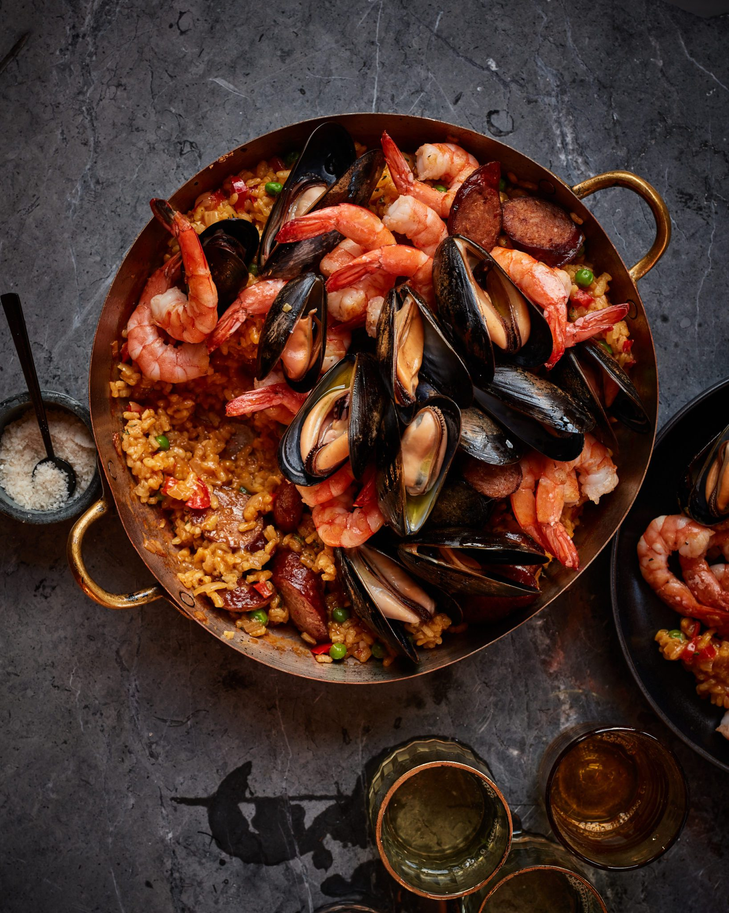

Paella

Description
Paella is a classic Spanish dish that blends saffron-seasoned rice with various ingredients like seafood, chicken, and vegetables. Known for its bold and aromatic flavors, the dish is a favorite for those who enjoy a mix of fresh, hearty ingredients. The saffron gives the rice a distinct golden color and rich, earthy taste that complements the combination of proteins and vegetables.
Traditionally enjoyed during family gatherings and special occasions, paella brings a vibrant array of textures and flavors to the table. The dish's versatility allows for different variations depending on the region or personal preference, making it a timeless and beloved meal in Spanish cuisine.
ingredients
- Chicken broth
- Garlic
- Tomato paste
- Red bell pepper
- Bay leaf
- Olive oil
- Peas
- Mussels
- Shrimp
- Rice
- Salt and pepper
- Clam juice
- Saffron
- Onion
- Wine
- Chorizo
Steps
- In a 13-inch paella pan, large enameled cast-iron pan (like a Le Creuset), or a large skillet, heat 2 tablespoons of the oil over medium heat. Cook the sliced chorizo, turning once, until lightly browned and some of the fat has rendered, about 3 minutes.
- Using a slotted spoon, transfer the browned chorizo to a plate and set aside. Add the onion and bell pepper to the pan and cook over medium heat, stirring frequently, until softened, about 5 minutes. Add the garlic and cook 1 minute more. Stir in the tomato paste.
- Add the rice and cook, stirring constantly, until coated with the vegetable mixture, about 2 minutes.
- Add the broth, clam juice, saffron, bay leaf, ¾ teaspoon salt and ¼ teaspoon pepper; bring to a boil.
- Cover and simmer over low heat, without stirring, until the rice is cooked and most of the liquid is absorbed, about 15 minutes. Fish out and discard the bay leaf. Stir in the peas, browned chorizo (along with any juices that accumulated on the plate) and thyme, then taste and adjust seasoning, if necessary. Remove the pan from the heat and cover to keep warm.
- In a separate large skillet, heat 2 tablespoons of the oil over medium heat until shimmering. Add the shrimp and sprinkle with ¼ teaspoon salt and a few grinds of pepper; cook, turning once, until the shrimp are pink and cooked through, about 3 minutes.
- Add the shrimp to the paella and cover to keep warm.
- In the same skillet that you cooked the shrimp (no need to rinse it first), bring the wine to a boil over medium heat. Add the mussels and cover with a lid.
- Cook, shaking the skillet occasionally, until the mussels open, 2 to 4 minutes.
- Pour the mussels and their cooking liquid over the paella. Drizzle the remaining 1 tablespoon of oil over the paella and serve.